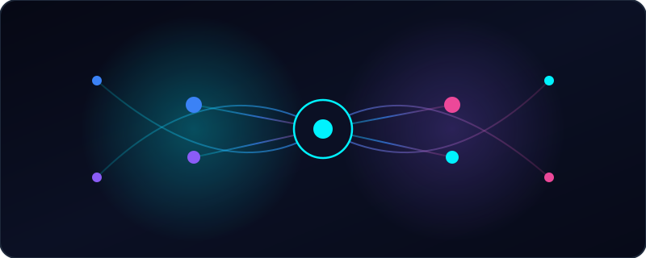

Verified Individual Consent
Administrator-assigned roles alone are never treated as consent. Global Reach requires verified, user-initiated opt-in records and enforces strict opt-out precedence before any campaign can be delivered.
Global Reach helps Discord server administrators coordinate opt-in community announcements with verified individual user consent, administrator approval safeguards, and least-privilege channel permissions.

722756633499009045) is currently in pre-verification preview and is not yet operating as an always-on public hosted service. Core consent verification, administrator campaign approval, permission evaluation, and data-deletion capabilities are implemented and tested, while live in-Discord opt-in buttons and /campaign slash commands are planned for post-verification deployment.
Built from the ground up for transparent, permission-respecting Discord community communication.
Administrator-assigned roles alone are never treated as consent. Global Reach requires verified, user-initiated opt-in records and enforces strict opt-out precedence before any campaign can be delivered.
Every announcement requires explicit approval from a verified server administrator or owner, cryptographically locking the campaign text, target channel, and sponsor attribution.
Announcements are posted strictly to designated server text or announcement channels with scoped role mentions—never through unsolicited Direct Messages.
Evaluates server roles, @everyone settings, and channel-specific overrides to confirm View Channels, Send Messages, and Embed Links before dispatch.
Global Reach never reads or stores chat message history, file attachments, or voice activity, and provides operator controls to honor opt-outs and purge user records.
Hosted webhook listeners for in-Discord opt-in/opt-out buttons and interactive /campaign slash commands are on the roadmap following Discord verification.
A four-step compliance workflow designed to protect community trust.
A server administrator authorizes Global Reach via Discord OAuth2 and designates the target server and announcement channel.
Community members explicitly opt in to receive notifications. Automated bot accounts and opted-out users are automatically excluded.
A verified server administrator reviews and approves the exact campaign message, sponsor attribution, target channel, and notification role.
Global Reach verifies channel permissions and audience consent, dispatches the announcement once, and records an immutable delivery audit entry.
Steps to authorize the application in your test or target Discord server.
MANAGE_GUILD) or Administrator permission on your target Discord server.Resources for public bug reporting, policy disclosures, and private security vulnerability reporting.
Report reproducible documentation or software issues via GitHub Issues or discuss features in GitHub Discussions. Never post personal Discord IDs or tokens publicly.
Review our Terms of Service and Privacy Policy for transparent disclosures on data handling, retention rules, and pre-launch privacy contact status.
Report software security vulnerabilities or credential leaks privately via GitHub Security Advisories (reserved for security vulnerabilities; see Privacy Policy for data-request guidance).